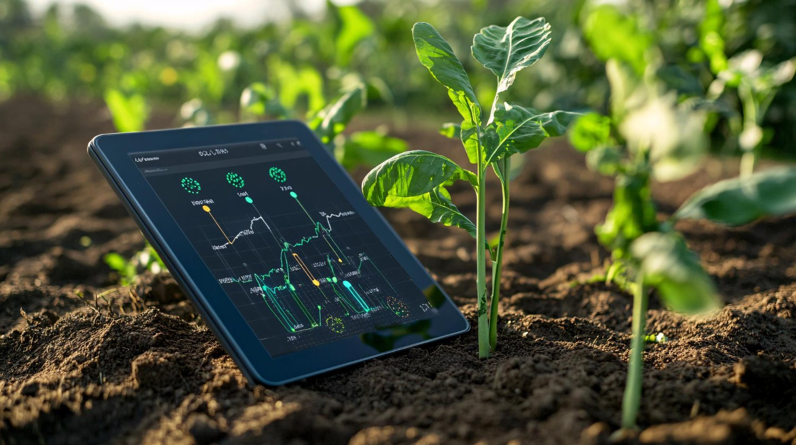

Learning-first artificial intelligence
Every suggested crop observation links to plain-language education, confidence information and an appropriate next step.
WHSF Flagship Innovation · Award-Ready Concept
A human-centred, multilingual and offline-first agricultural learning platform designed to help smallholder farmers and young learners recognize crop risks, understand local conditions and build climate-smart livelihoods.

The challenge
Many smallholder farmers and agricultural learners face limited access to timely extension support, local-language resources, trusted crop guidance and reliable connectivity. Climate variability adds further pressure to already vulnerable livelihoods.
Our response
AgriLearn AI connects simple crop observation, weather-aware guidance, field records and short educational lessons in one accessible experience. The platform is designed to support—not replace—farmers, teachers, extension professionals and agronomists.
Read the project storyWhat makes it distinctive
Award-worthy innovation is not only advanced technology. It is technology that is useful, inclusive, safe, scalable and capable of demonstrating measurable benefit.
Every suggested crop observation links to plain-language education, confidence information and an appropriate next step.
Core lessons and farm records are intended to remain useful when connectivity is limited or intermittent.
Initial content is planned for English, Hausa, Yoruba and Igbo, with community review to improve meaning and trust.
The proposed workflow encourages users to confirm important treatment decisions with qualified agricultural advisers.
Schools, cooperatives and learning plots can use the same platform to connect digital skills, agriculture and entrepreneurship.
The pilot model prioritizes validation, feedback, safeguards and transparent reporting before wider deployment.
Integrated platform
Capture a crop image and receive an educational indication, image-quality prompts and responsible next-step guidance.
Use understandable local conditions to support decisions about planting, irrigation, spraying and field activity.
Record observations, photographs, treatments and activities to create a useful history for each farm or learning plot.
Access concise lessons on crop care, soil health, climate resilience, safe technology use and entrepreneurship.
Enable educators, extension workers and cooperative leaders to support groups of farmers and learners.
Track participation, lesson completion and pilot outcomes using consent-based, privacy-conscious monitoring.
Pilot impact framework
Final pilot targets will be agreed with participating communities and partners. The proposed framework will measure practical learning, adoption, safety and inclusion.
Track farmers, young learners, women, facilitators, schools and cooperatives reached by the pilot.
Use simple pre- and post-learning assessments to measure understanding of crop care and climate-smart practices.
Document whether participants apply safer observation, recordkeeping, soil, water and crop-management practices.
Evaluate clarity, accessibility, user confidence, inappropriate recommendations and escalation to qualified experts.
Global relevance
Supports agricultural knowledge, resilient production and informed crop management.
Expands practical agricultural, digital and climate learning for young people and adults.
Prioritizes accessible participation for women and girls in agriculture and technology.
Connects learning with productivity, entrepreneurship and stronger rural livelihoods.
Applies inclusive digital infrastructure and responsible AI to community challenges.
Promotes climate awareness, adaptation learning and locally appropriate field practices.
Responsible AI commitment
AgriLearn AI will not be presented as a substitute for agronomists, extension officers, laboratory testing or professional diagnosis. Any pilot must include informed consent, clear limitations, data minimisation, community review and documented escalation pathways.
Users are told what the system can and cannot do.
High-impact actions require qualified local advice.
Only necessary information is collected and protected.
Feedback and complaints inform continuous improvement.
Collaboration model
Support crop expertise, field validation and safe recommendations.
Connect research, agriculture, AI, climate education and youth innovation.
Co-design the experience and determine what is locally useful.
Support prototype development, devices, training, connectivity and independent evaluation.
Transparent impact
Review proposed pilot targets, inclusion indicators, learning outcomes, implementation reach, Sustainable Development Goal alignment and the evidence methods that will separate verified results from projections.
The dashboard presents targets as targets—not completed results—and explains how future pilot performance will be measured responsibly.
Global expansion
Explore fruit, food, field crops and region-specific learning across the United States and all five African regions, with English, French and Spanish access.